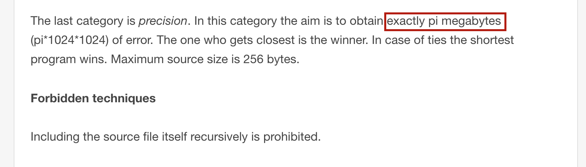

Rust for PHP devs

@timglabisch

pub fn main() {
println!("{}", "Hello PHPUG!");
}
pub fn main() {
let foo = "bar";
println!("Hello {}", foo);
}
pub fn greet(name : String) {
println!("Hello {}", name);
}
pub fn main() {
let name = "PHPUG".to_string();
greet(name);
}
struct Person {
pub age: i32
}
pub fn main() {
let tim = Person { age: 25 };
println!("tim is {} years old", tim.age);
}
struct Person {
age: i32
}
impl Person {
pub fn new(age : i32) -> Person {
Person {
age: age
}
}
}
pub fn main() {
let tim = Person::new(25);
println!("tim is {} years old", tim.age);
}
Warum Rust?

Stell dir vor, du bist Mozilla.
Welche Sprache würdest du verwenden um den Next Gen. Firefox zu bauen?


Der ganze wichtige Kram
ist in C / C++
geschrieben
Warum ist das eigentlich so?
Mozilla beispielsweise hat das Problem, dass es Firefox maintaint.
Firefox ist ein gewaltiges C++ Projekt.
Trotz enormer sorgfalt, gibt es immer wieder segaults und sicherheitsprobleme mit dem speichermanagement.
threading ist unheimlich hart (dadurch oft nicht optimal eingesetzt u.s.w.)
Warum aber muss Mozilla C++ oder C für den Firefox verwenden?
vergleichen wir doch mal unterschiedliche Sprachen...
Vor dem Problem steht nicht nur Mozilla.
Fast jede wirklich wichtige Basistechnologie ist in C / C++ geschrieben
Warum?
Performance
Kontroller
Warum macht C / C++ keinen Spass?
Können wir das heute nicht besser?
Warum macht C / C++ keinen Spass? (Fehlerhandling)

Warum macht C / C++ keinen Spass? (Fehlerhandling)
Kein sinnvoller IDE Support.
Kein "Composer".
Memory Management.
Was bedeutet eigentlich kein GC?
public function getText() {
return "Hallo Welt"; // Im Ram wird eine zval für den String angelegt. Counter steht auf 1.
}
public function doSomething() {
$text = getText(); // Im Ram wird eine zval für den String angelegt. Counter steht auf 1.
echo $text; // Text wird ausgegeben.
}
doSomething();
// GC Rennt und prüft ob die "Strings" noch "Aufrufbar" sind.
Was für Probleme bringt das mit?
#include#include int main() { char *str = (char *) malloc(sizeof(char) * 3); str[0] = 'a'; str[1] = 'b'; str[2] = '\0'; printf("%s",str); return 0; }
gcc -c main.c
/usr/local/Cellar/valgrind/HEAD/bin/valgrind --tool=memcheck ./a.out ==6343== Memcheck, a memory error detector ==6343== Copyright (C) 2002-2015, and GNU GPL'd, by Julian Seward et al. ==6343== Using Valgrind-3.12.0.SVN and LibVEX; rerun with -h for copyright info ==6343== Command: ./a.out ==6343== ab==6343== ==6343== HEAP SUMMARY: ==6343== in use at exit: 38,722 bytes in 416 blocks ==6343== total heap usage: 516 allocs, 100 frees, 45,698 bytes allocated ==6343== ==6343== LEAK SUMMARY: ==6343== definitely lost: 3 bytes in 1 blocks ==6343== indirectly lost: 0 bytes in 0 blocks ==6343== possibly lost: 0 bytes in 0 blocks ==6343== still reachable: 0 bytes in 0 blocks ==6343== suppressed: 38,719 bytes in 415 blocks ==6343== Rerun with --leak-check=full to see details of leaked memory ==6343== ==6343== For counts of detected and suppressed errors, rerun with: -v ==6343== ERROR SUMMARY: 0 errors from 0 contexts (suppressed: 0 from 0)
gcc -c main.c
➜ c1 /usr/local/Cellar/valgrind/HEAD/bin/valgrind --tool=memcheck ./a.out #include#include int main() { char *str = (char *) malloc(sizeof(char) * 3); str[0] = 'a'; str[1] = 'b'; str[2] = '\0'; printf("%s",str); free(str); return 0; }
mit free
/usr/local/Cellar/valgrind/HEAD/bin/valgrind --tool=memcheck ./a.out ==6458== Memcheck, a memory error detector ==6458== Copyright (C) 2002-2015, and GNU GPL'd, by Julian Seward et al. ==6458== Using Valgrind-3.12.0.SVN and LibVEX; rerun with -h for copyright info ==6458== Command: ./a.out ==6458== --6458-- run: /usr/bin/dsymutil "./a.out" warning: no debug symbols in executable (-arch x86_64) ab==6458== ==6458== HEAP SUMMARY: ==6458== in use at exit: 38,719 bytes in 415 blocks ==6458== total heap usage: 516 allocs, 101 frees, 45,698 bytes allocated ==6458== ==6458== LEAK SUMMARY: ==6458== definitely lost: 0 bytes in 0 blocks ==6458== indirectly lost: 0 bytes in 0 blocks ==6458== possibly lost: 0 bytes in 0 blocks ==6458== still reachable: 0 bytes in 0 blocks ==6458== suppressed: 38,719 bytes in 415 blocks ==6458== ==6458== For counts of detected and suppressed errors, rerun with: -v ==6458== ERROR SUMMARY: 0 errors from 0 contexts (suppressed: 0 from 0)
mit free
➜ c1 /usr/local/Cellar/valgrind/HEAD/bin/valgrind --tool=memcheck ./a.out #include#include int main() { char *str = (char *) malloc(sizeof(char) * 3); str[0] = 'a'; str[1] = 'b'; str[2] = '\0'; printf("%s",str); free(str); free(str); return 0; }
mit free
/usr/local/Cellar/valgrind/HEAD/bin/valgrind --tool=memcheck ./a.out ==6568== Memcheck, a memory error detector ==6568== Copyright (C) 2002-2015, and GNU GPL'd, by Julian Seward et al. ==6568== Using Valgrind-3.12.0.SVN and LibVEX; rerun with -h for copyright info ==6568== Command: ./a.out ==6568== --6568-- run: /usr/bin/dsymutil "./a.out" warning: no debug symbols in executable (-arch x86_64) ==6568== Invalid free() / delete / delete[] / realloc() ==6568== at 0x10000923F: free (in /usr/local/Cellar/valgrind/HEAD/lib/valgrind/vgpreload_memcheck-amd64-darwin.so) ==6568== by 0x100000F4C: main (in ./a.out) ==6568== Address 0x1008008f0 is 0 bytes inside a block of size 3 free'd ==6568== at 0x10000923F: free (in /usr/local/Cellar/valgrind/HEAD/lib/valgrind/vgpreload_memcheck-amd64-darwin.so) ==6568== by 0x100000F43: main (in ./a.out) ==6568== Block was alloc'd at ==6568== at 0x100008DFB: malloc (in /usr/local/Cellar/valgrind/HEAD/lib/valgrind/vgpreload_memcheck-amd64-darwin.so) ==6568== by 0x100000F0A: main (in ./a.out) ==6568== ab==6568== ==6568== HEAP SUMMARY: ==6568== in use at exit: 38,719 bytes in 415 blocks ==6568== total heap usage: 516 allocs, 102 frees, 45,698 bytes allocated ==6568== ==6568== LEAK SUMMARY: ==6568== definitely lost: 0 bytes in 0 blocks ==6568== indirectly lost: 0 bytes in 0 blocks ==6568== possibly lost: 0 bytes in 0 blocks ==6568== still reachable: 0 bytes in 0 blocks ==6568== suppressed: 38,719 bytes in 415 blocks ==6568== ==6568== For counts of detected and suppressed errors, rerun with: -v ==6568== ERROR SUMMARY: 1 errors from 1 contexts (suppressed: 0 from 0)
mit free
C / C++ / Rust haben kein GC.
Wie löst Rust das "Problem"?
pub fn greet(name : String) {
println!("Hello {}", name);
}
pub fn main() {
let name = "PHPUG".to_string();
greet(name);
}
- String zu Integer tauschen und zeigen, dass es geht.
- String zu slice tauschen, und Zeigen, dass es geht.
Borrowing
pub fn greet(name : &String) {
println!("Hello {}", name);
}
pub fn main() {
let name = "PHPUG".to_string();
greet(&name);
greet(&name);
}
- String zu Integer tauschen und zeigen, dass es geht.
- String zu slice tauschen, und Zeigen, dass es geht.
Installation
Rustup / (apt / compile your own / phpbrew)$ phpbrew install 5.4.0 +default $ phpbrew use 5.4.22
$ rustup [TODO] $ rustup [TODO]
Package Management
cargo / composercomposer
composer.json / composer.lock

cargo
Cargo.toml / Cargo.lock

cargo
$ cargo new --bin hellophpug $ cargo run
IDE?

PHP "Basics"
include (multiple files), namespaces (visibility), easy development, composer (semver),Lets "write" a small webserver.
$ cargo new --bin webfooCargo.toml:
[dependencies] nickel = "*"main.rs:
#[macro_use] extern crate nickel;
use nickel::{Nickel, HttpRouter};
fn main() {
let mut server = Nickel::new();
server.get("/", middleware!(
let a = "Hello World";
a
));
server.get("/bar", middleware!("Bar"));
server.listen("127.0.0.1:6767");
}
cargo run